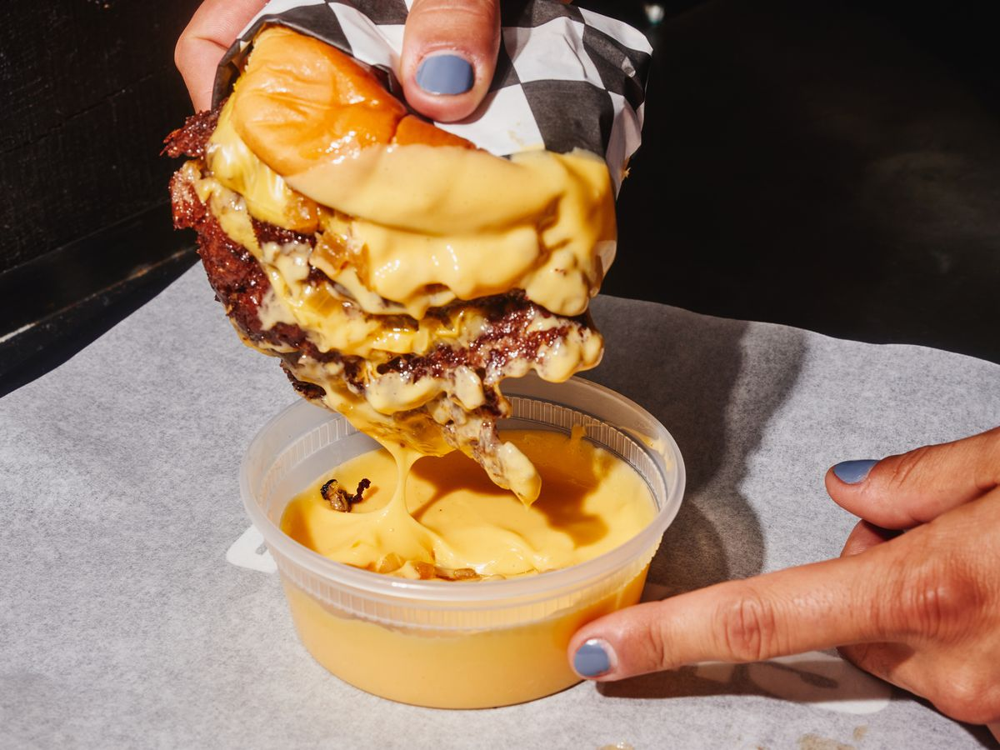

Ohio Smash Burgers

You already know what's up
Burgers
- 1 lb. ground chuck (80% lean, 20% fat)
kosher salt, fresh ground black pepper
- 1 small yellow onion, thinly sliced
- 2 tbsp beef tallow
To Serve
- 2 brioche buns
- 8 dill pickle slices
- 4 provolone slices
ketchup, mustard, burger sauce etc
Method
- Separate your 1 lb. ground chuck roast into four roughly equal balls.
- Over medium-high heat, melt 1 tbsp beef tallow in a cast iron or non-stick pan until smoking.
- Place your ground beef balls into the hot pan, working in batches if the pan seems crowded, and press down firmly with the flat side of a spatula. Once flat, season with kosher salt and fresh ground black pepper.
- Repeat for your remaining beef if necessary.
- Toast your brioche bun halves in the pan.
- Assemble your burgers, topping with onions, pickles and your preferred sauce.